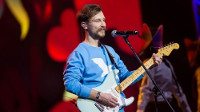

Kazkas groja

Froning has competed in the CrossFit Games since 2010. Froning won the 2011 CrossFit Games, and followed that up by winning every stage of the 2012-2014 Games season including the worldwide Open, Regionals, and the Games. That winning streak ended after he retired from Individual Competition in 2015, and he subsequently took second place in the world in the 2015 Open, behind Mathew Fraser. However, as part of his new team, CrossFit Mayhem Freedom, he began a new winning streak by earning first place at both the 2015 Central East Regional and at the Games.
Froning has said "It's not necessarily that I like to win, but I hate losing more.In 2010, Froning qualified for the 2010 Southeast Regional competition through the Sectional Qualifiers, a precursor to the online-based Open. Froning won the Regional, thereby qualifying for the fourth CrossFit Games at the Home Depot Center in Carson, California.
At the 2010 Games, Froning earned five top 5 finishes including two event wins, and never dropped below 13th. He was leading heading into the final event, however the rope climb portion of the final event exposed "a chink in his armor" in terms of technique. Froning did not know how to wrap his legs and feet around the rope, so he was forced to attempt the rope climbs only using his arms. Fatigued, Froning fell from the rope multiple times. His 12th-place finish on the final event opened up the space necessary for Graham Holmberg to move up to the top spot. The 2010 Games podium had Holmberg in first, Froning in second, and Chris Spealler in third.